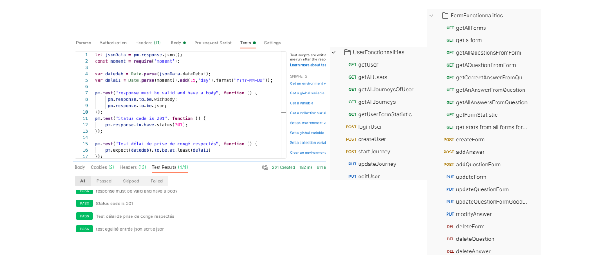

Self-Description
A recent Computer Engineering graduate with a significant 3-year experience in Information Systems, I have excelled in various roles ranging from team member to team leader. My expertise encompasses designing microservices, developing robust backend and frontend solutions for both web and mobile platforms, including Android and iOS. My journey also includes orchestrating deployment, transitioning infrastructure to cloud-based platforms like Kubernetes, Openshift, and AWS IaaS, along with extensive testing and monitoring
Experience Highlights
Overall Full Stack Engineer Experience
Developed APIs using Java and NodeJS, Spring Boot Framework, and MVC pattern.
Implemented authentication using Keycloak for OAuth tokens, integrated with Google Identity Provider.
Managed data with MySQL database systems. Conducted regression and functional testing with Postman.
Frontend development using React, NextJS, Flutter & Dart along with BLOC library for state management. Authored a blog post on BLOC for state management.
Read Blog Post
Time and Projects Management for Consultants
Built a system for consultants to track time spent on various projects, across diverse clients, through different tasks, enhancing productivity and project management.
Integrated features for scheduling, reporting, and real-time updates.
Inventory Management System
Developed an application to manage company inventory including PCs, books, keys.
Implemented features for tracking, updating, and reporting inventory status.
Push and mail notification system using Kafka when an alert was sent through the creation of an issue.
Days Off Management Application
Created a system for managing employee leave requests and approvals.
Incorporated a calendar view for easy tracking of team availability and leave balances.
Incorporated history review to follow each request, approval, and cancelation.
Integrated the system with Google Calendar and implemented email and push notifications using Kafka to notify managers of employee requests.
Employee Management System
Developed a comprehensive solution for managing employee data, performance reviews, and departmental information.
Included features for data visualization and easy access to employee records.
Invoices Management Application
Built an application for generating, tracking, and managing invoices.
Streamlined the process of invoice creation, approval, and distribution.
Implemented a mail and push notification system using Kafka to alert about upcoming invoice payment dates.
Form Students Evaluating Application
Built an application for generating, updating and completing forms aimed at students for exams.
Chat Application
Developed a real-time web-application to handle private and group communications using Javascript stack with NodeJS and NextJS.
Containerization & Cloud Migration Expert
Led migration projects to Kubernetes and Openshift.
Implemented infrastructure solutions on AWS IaaS.
Quality Assurance
roficient in testing tools like Postman, Selenium, Jmeter, Neoload
Experience in setting up CI/CD pipelines using Git
Monitoring Systems Expert
Experience with Grafana, Prometheus, Elastic Stack, Dynatrace, and Datadog
Project Leadership
Demonstrated leadership in several project initiatives, applying DevOps principles in practical IT environments
Screenshot examples

Example views of Days off management microservice

Examples of Postman Collections

Used Swagger to manage a strong and useful documentation for all projects
Key Skills and Attributes
Backend Development: Proficient in Java, Spring Boot, advanced in NodeJS
Frontend Development: Skilled in Flutter, React, JavaScript, HTML/CSS
DevOps: Proficient in CI/CD pipelines, GitLab, Python and Shell scripting, Kubernetes and Openshift, Helm
Cloud Technologies: Advanced knowledge AWS, Azure, intermediate in Openstack
IaC: Proficient in Terraform, Packer, Ansible
Monitoring Tools: Skilled in Grafana, Prometheus, Elastic Stack, intermediate in Datadog
Microservices Architecture: Proven track record in design, development, and deployment
Strong leadership skills, adaptable to various project requirements
Future Endeavors
Keen on exploring new opportunities in Korea's tech industry
Aiming to enhance collaboration with Korean teams by improving language skills